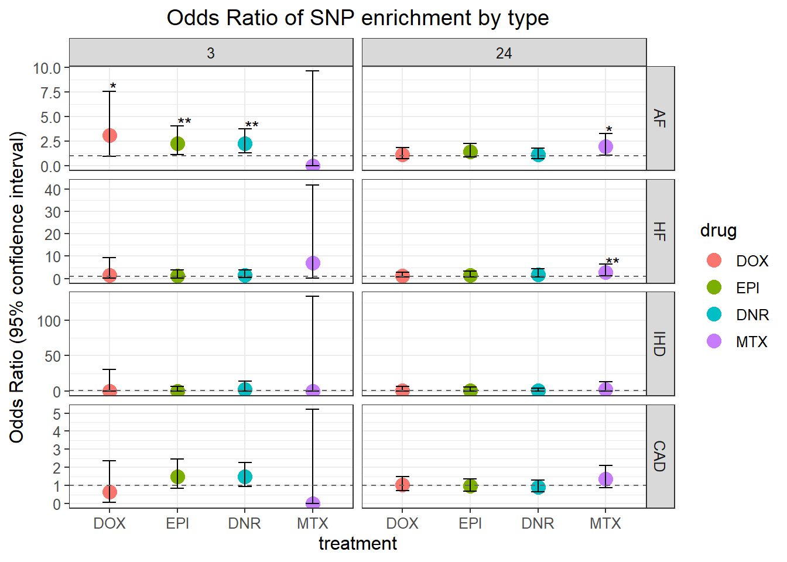
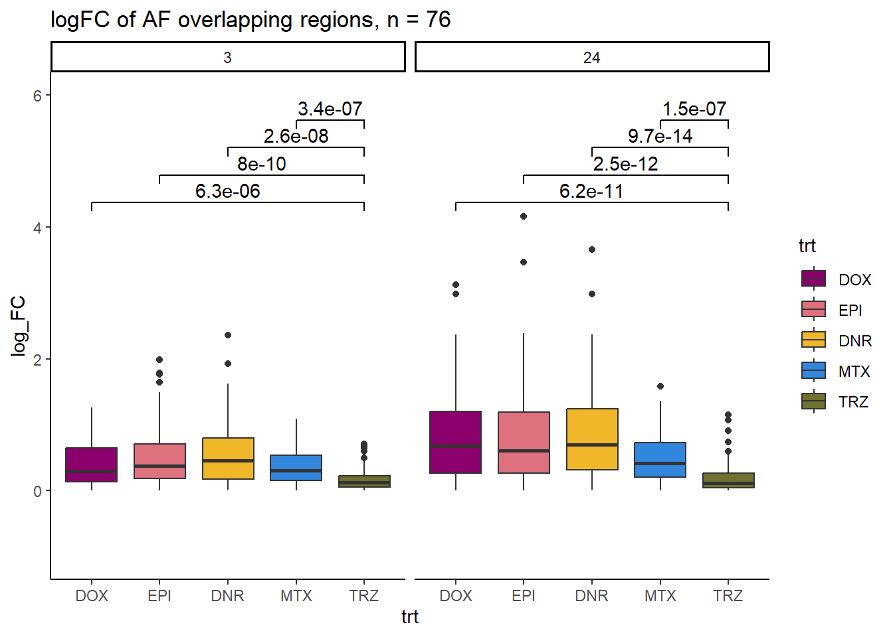
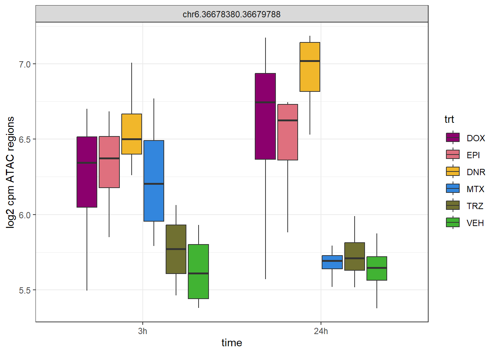
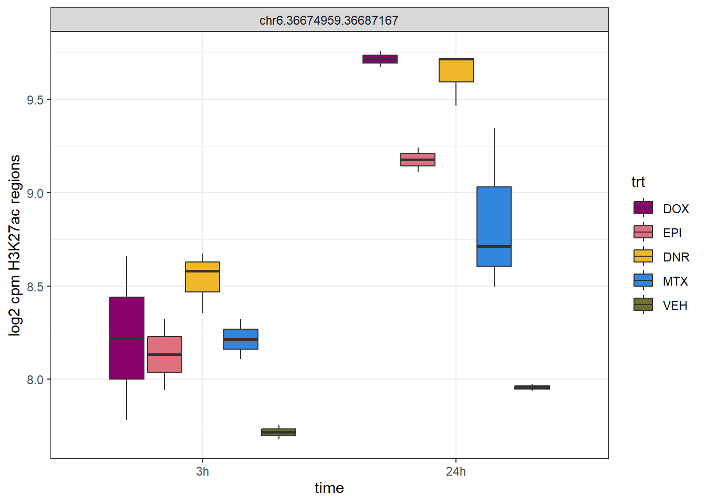
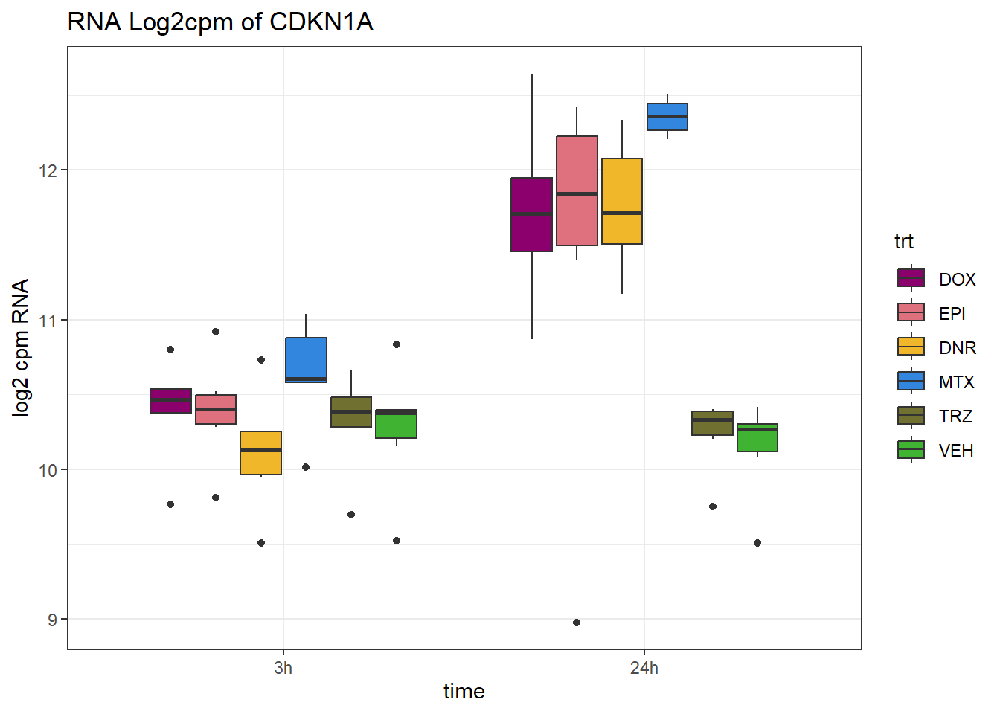

Figure 6
Renee Matthews
2025-02-25
Last updated: 2025-08-07
Checks: 7 0
Knit directory: ATAC_learning/
This reproducible R Markdown analysis was created with workflowr (version 1.7.1). The Checks tab describes the reproducibility checks that were applied when the results were created. The Past versions tab lists the development history.
Great! Since the R Markdown file has been committed to the Git repository, you know the exact version of the code that produced these results.
Great job! The global environment was empty. Objects defined in the global environment can affect the analysis in your R Markdown file in unknown ways. For reproduciblity it’s best to always run the code in an empty environment.
The command set.seed(20231016) was run prior to running
the code in the R Markdown file. Setting a seed ensures that any results
that rely on randomness, e.g. subsampling or permutations, are
reproducible.
Great job! Recording the operating system, R version, and package versions is critical for reproducibility.
Nice! There were no cached chunks for this analysis, so you can be confident that you successfully produced the results during this run.
Great job! Using relative paths to the files within your workflowr project makes it easier to run your code on other machines.
Great! You are using Git for version control. Tracking code development and connecting the code version to the results is critical for reproducibility.
The results in this page were generated with repository version 8b026da. See the Past versions tab to see a history of the changes made to the R Markdown and HTML files.
Note that you need to be careful to ensure that all relevant files for
the analysis have been committed to Git prior to generating the results
(you can use wflow_publish or
wflow_git_commit). workflowr only checks the R Markdown
file, but you know if there are other scripts or data files that it
depends on. Below is the status of the Git repository when the results
were generated:
Ignored files:
Ignored: .RData
Ignored: .Rhistory
Ignored: .Rproj.user/
Ignored: analysis/H3K27ac_integration_noM.Rmd
Ignored: analysis/figure/
Ignored: data/ACresp_SNP_table.csv
Ignored: data/ARR_SNP_table.csv
Ignored: data/All_merged_peaks.tsv
Ignored: data/CAD_gwas_dataframe.RDS
Ignored: data/CTX_SNP_table.csv
Ignored: data/Collapsed_expressed_NG_peak_table.csv
Ignored: data/DEG_toplist_sep_n45.RDS
Ignored: data/FRiP_first_run.txt
Ignored: data/Final_four_data/
Ignored: data/Frip_1_reads.csv
Ignored: data/Frip_2_reads.csv
Ignored: data/Frip_3_reads.csv
Ignored: data/Frip_4_reads.csv
Ignored: data/Frip_5_reads.csv
Ignored: data/Frip_6_reads.csv
Ignored: data/GO_KEGG_analysis/
Ignored: data/HF_SNP_table.csv
Ignored: data/Ind1_75DA24h_dedup_peaks.csv
Ignored: data/Ind1_TSS_peaks.RDS
Ignored: data/Ind1_firstfragment_files.txt
Ignored: data/Ind1_fragment_files.txt
Ignored: data/Ind1_peaks_list.RDS
Ignored: data/Ind1_summary.txt
Ignored: data/Ind2_TSS_peaks.RDS
Ignored: data/Ind2_fragment_files.txt
Ignored: data/Ind2_peaks_list.RDS
Ignored: data/Ind2_summary.txt
Ignored: data/Ind3_TSS_peaks.RDS
Ignored: data/Ind3_fragment_files.txt
Ignored: data/Ind3_peaks_list.RDS
Ignored: data/Ind3_summary.txt
Ignored: data/Ind4_79B24h_dedup_peaks.csv
Ignored: data/Ind4_TSS_peaks.RDS
Ignored: data/Ind4_V24h_fraglength.txt
Ignored: data/Ind4_fragment_files.txt
Ignored: data/Ind4_fragment_filesN.txt
Ignored: data/Ind4_peaks_list.RDS
Ignored: data/Ind4_summary.txt
Ignored: data/Ind5_TSS_peaks.RDS
Ignored: data/Ind5_fragment_files.txt
Ignored: data/Ind5_fragment_filesN.txt
Ignored: data/Ind5_peaks_list.RDS
Ignored: data/Ind5_summary.txt
Ignored: data/Ind6_TSS_peaks.RDS
Ignored: data/Ind6_fragment_files.txt
Ignored: data/Ind6_peaks_list.RDS
Ignored: data/Ind6_summary.txt
Ignored: data/Knowles_4.RDS
Ignored: data/Knowles_5.RDS
Ignored: data/Knowles_6.RDS
Ignored: data/LiSiLTDNRe_TE_df.RDS
Ignored: data/MI_gwas.RDS
Ignored: data/SNP_GWAS_PEAK_MRC_id
Ignored: data/SNP_GWAS_PEAK_MRC_id.csv
Ignored: data/SNP_gene_cat_list.tsv
Ignored: data/SNP_supp_schneider.RDS
Ignored: data/TE_info/
Ignored: data/TFmapnames.RDS
Ignored: data/all_TSSE_scores.RDS
Ignored: data/all_four_filtered_counts.txt
Ignored: data/aln_run1_results.txt
Ignored: data/anno_ind1_DA24h.RDS
Ignored: data/anno_ind4_V24h.RDS
Ignored: data/annotated_gwas_SNPS.csv
Ignored: data/background_n45_he_peaks.RDS
Ignored: data/cardiac_muscle_FRIP.csv
Ignored: data/cardiomyocyte_FRIP.csv
Ignored: data/col_ng_peak.csv
Ignored: data/cormotif_full_4_run.RDS
Ignored: data/cormotif_full_4_run_he.RDS
Ignored: data/cormotif_full_6_run.RDS
Ignored: data/cormotif_full_6_run_he.RDS
Ignored: data/cormotif_probability_45_list.csv
Ignored: data/cormotif_probability_45_list_he.csv
Ignored: data/cormotif_probability_all_6_list.csv
Ignored: data/cormotif_probability_all_6_list_he.csv
Ignored: data/datasave.RDS
Ignored: data/embryo_heart_FRIP.csv
Ignored: data/enhancer_list_ENCFF126UHK.bed
Ignored: data/enhancerdata/
Ignored: data/filt_Peaks_efit2.RDS
Ignored: data/filt_Peaks_efit2_bl.RDS
Ignored: data/filt_Peaks_efit2_n45.RDS
Ignored: data/first_Peaksummarycounts.csv
Ignored: data/first_run_frag_counts.txt
Ignored: data/full_bedfiles/
Ignored: data/gene_ref.csv
Ignored: data/gwas_1_dataframe.RDS
Ignored: data/gwas_2_dataframe.RDS
Ignored: data/gwas_3_dataframe.RDS
Ignored: data/gwas_4_dataframe.RDS
Ignored: data/gwas_5_dataframe.RDS
Ignored: data/high_conf_peak_counts.csv
Ignored: data/high_conf_peak_counts.txt
Ignored: data/high_conf_peaks_bl_counts.txt
Ignored: data/high_conf_peaks_counts.txt
Ignored: data/hits_files/
Ignored: data/hyper_files/
Ignored: data/hypo_files/
Ignored: data/ind1_DA24hpeaks.RDS
Ignored: data/ind1_TSSE.RDS
Ignored: data/ind2_TSSE.RDS
Ignored: data/ind3_TSSE.RDS
Ignored: data/ind4_TSSE.RDS
Ignored: data/ind4_V24hpeaks.RDS
Ignored: data/ind5_TSSE.RDS
Ignored: data/ind6_TSSE.RDS
Ignored: data/initial_complete_stats_run1.txt
Ignored: data/left_ventricle_FRIP.csv
Ignored: data/median_24_lfc.RDS
Ignored: data/median_3_lfc.RDS
Ignored: data/mergedPeads.gff
Ignored: data/mergedPeaks.gff
Ignored: data/motif_list_full
Ignored: data/motif_list_n45
Ignored: data/motif_list_n45.RDS
Ignored: data/multiqc_fastqc_run1.txt
Ignored: data/multiqc_fastqc_run2.txt
Ignored: data/multiqc_genestat_run1.txt
Ignored: data/multiqc_genestat_run2.txt
Ignored: data/my_hc_filt_counts.RDS
Ignored: data/my_hc_filt_counts_n45.RDS
Ignored: data/n45_bedfiles/
Ignored: data/n45_files
Ignored: data/other_papers/
Ignored: data/peakAnnoList_1.RDS
Ignored: data/peakAnnoList_2.RDS
Ignored: data/peakAnnoList_24_full.RDS
Ignored: data/peakAnnoList_24_n45.RDS
Ignored: data/peakAnnoList_3.RDS
Ignored: data/peakAnnoList_3_full.RDS
Ignored: data/peakAnnoList_3_n45.RDS
Ignored: data/peakAnnoList_4.RDS
Ignored: data/peakAnnoList_5.RDS
Ignored: data/peakAnnoList_6.RDS
Ignored: data/peakAnnoList_Eight.RDS
Ignored: data/peakAnnoList_full_motif.RDS
Ignored: data/peakAnnoList_n45_motif.RDS
Ignored: data/siglist_full.RDS
Ignored: data/siglist_n45.RDS
Ignored: data/summarized_peaks_dataframe.txt
Ignored: data/summary_peakIDandReHeat.csv
Ignored: data/test.list.RDS
Ignored: data/testnames.txt
Ignored: data/toplist_6.RDS
Ignored: data/toplist_full.RDS
Ignored: data/toplist_full_DAR_6.RDS
Ignored: data/toplist_n45.RDS
Ignored: data/trimmed_seq_length.csv
Ignored: data/unclassified_full_set_peaks.RDS
Ignored: data/unclassified_n45_set_peaks.RDS
Ignored: data/xstreme/
Untracked files:
Untracked: RNA_seq_integration.Rmd
Untracked: Rplot.pdf
Untracked: Sig_meta
Untracked: analysis/.gitignore
Untracked: analysis/AF_HF_SNP_DAR_paper.Rmd
Untracked: analysis/Cormotif_analysis_testing diff.Rmd
Untracked: analysis/Diagnosis-tmm.Rmd
Untracked: analysis/Expressed_RNA_associations.Rmd
Untracked: analysis/IF_counts_20x.Rmd
Untracked: analysis/Jaspar_motif_DAR_paper.Rmd
Untracked: analysis/LFC_corr.Rmd
Untracked: analysis/SVA.Rmd
Untracked: analysis/Tan2020.Rmd
Untracked: analysis/making_master_peaks_list.Rmd
Untracked: analysis/my_hc_filt_counts.csv
Untracked: code/Concatenations_for_export.R
Untracked: code/IGV_snapshot_code.R
Untracked: code/LongDARlist.R
Untracked: code/just_for_Fun.R
Untracked: my_plot.pdf
Untracked: my_plot.png
Untracked: output/cormotif_probability_45_list.csv
Untracked: output/cormotif_probability_all_6_list.csv
Untracked: setup.RData
Unstaged changes:
Modified: ATAC_learning.Rproj
Modified: analysis/AC_shared_analysis.Rmd
Modified: analysis/AF_HF_SNPs.Rmd
Modified: analysis/Cardiotox_SNPs.Rmd
Modified: analysis/Cormotif_analysis.Rmd
Modified: analysis/DEG_analysis.Rmd
Modified: analysis/Figure_4.Rmd
Modified: analysis/H3K27ac_integration.Rmd
Modified: analysis/Jaspar_motif.Rmd
Modified: analysis/Jaspar_motif_ff.Rmd
Modified: analysis/SNP_TAD_peaks.Rmd
Modified: analysis/TE_analysis_norm.Rmd
Modified: analysis/final_four_analysis.Rmd
Modified: analysis/index.Rmd
Note that any generated files, e.g. HTML, png, CSS, etc., are not included in this status report because it is ok for generated content to have uncommitted changes.
These are the previous versions of the repository in which changes were
made to the R Markdown (analysis/Figure_6.Rmd) and HTML
(docs/Figure_6.html) files. If you’ve configured a remote
Git repository (see ?wflow_git_remote), click on the
hyperlinks in the table below to view the files as they were in that
past version.
| File | Version | Author | Date | Message |
|---|---|---|---|---|
| Rmd | 8b026da | reneeisnowhere | 2025-08-07 | wflow_publish("analysis/Figure_6.Rmd") |
| html | a197856 | reneeisnowhere | 2025-05-01 | Build site. |
| html | 99ea869 | E. Renee Matthews | 2025-02-26 | Build site. |
| Rmd | 3af930f | E. Renee Matthews | 2025-02-26 | wflow_publish("analysis/Figure_6.Rmd") |
Figure 6: Drug-responsive regions overlap SNPs associated with atrial fibrillation
knitr::include_graphics("assets/Figure\ 6.png", error=FALSE)
knitr::include_graphics("docs/assets/Figure\ 6.png",error = FALSE)
library(tidyverse)
library(kableExtra)
library(broom)
library(RColorBrewer)
library("TxDb.Hsapiens.UCSC.hg38.knownGene")
library("org.Hs.eg.db")
library(rtracklayer)
library(ggfortify)
library(readr)
library(BiocGenerics)
library(gridExtra)
library(VennDiagram)
library(scales)
library(ggVennDiagram)
library(BiocParallel)
library(ggpubr)
library(edgeR)
library(genomation)
library(ggsignif)
library(plyranges)
library(ggrepel)
library(ComplexHeatmap)
library(cowplot)
library(smplot2)
library(readxl)
library(devtools)
library(vargen)gwas_HF <- readRDS("data/other_papers/HF_gwas_association_downloaded_2025_01_23_EFO_0003144_withChildTraits.RDS")
gwas_ARR <- readRDS("data/other_papers/AF_gwas_association_downloaded_2025_01_23_EFO_0000275.RDS")
gwas_IHD <- readRDS("data/other_papers/IHD_IHD_gwas_association_downloaded_2025_06_26_EFO_1001375_withChildTraits")
gwas_CAD <- readRDS( "data/CAD_gwas_dataframe.RDS")
gwas_ACresp <- readRDS("data/gwas_3_dataframe.RDS")
Short_gwas_gr <-
gwas_ARR %>%
distinct(SNPS,.keep_all = TRUE) %>%
dplyr::select(CHR_ID, CHR_POS,SNPS) %>%
mutate(gwas="AF") %>%
rbind(gwas_HF %>%
distinct(SNPS,.keep_all = TRUE) %>%
dplyr::select(CHR_ID, CHR_POS,SNPS) %>%
mutate(gwas="HF")) %>%
rbind(gwas_IHD %>%
distinct(SNPS,.keep_all = TRUE) %>%
dplyr::select(CHR_ID, CHR_POS,SNPS) %>%
mutate(gwas="IHD")) %>%
rbind(gwas_CAD %>%
distinct(SNPS,.keep_all = TRUE) %>%
dplyr::select(CHR_ID, CHR_POS,SNPS) %>%
mutate(gwas="CAD")) %>%
na.omit() %>%
mutate(seqnames=paste0("chr",CHR_ID), CHR_POS=as.numeric(CHR_POS)) %>%
na.omit() %>%
mutate(start=CHR_POS, end=CHR_POS, width=1) %>%
GRanges()
toptable_results <- readRDS("data/Final_four_data/re_analysis/Toptable_results.RDS")
all_results <- toptable_results %>%
imap(~ .x %>% tibble::rownames_to_column(var = "rowname") %>%
mutate(source = .y)) %>%
bind_rows()
DOX_3_sig <-all_results %>%
dplyr::select(source,genes, logFC,adj.P.Val) %>%
mutate("Peakid"=genes) %>%
dplyr::filter(source=="DOX_3") %>%
dplyr::filter(adj.P.Val<0.05)
DOX_24_sig <-all_results %>%
dplyr::select(source,genes, logFC,adj.P.Val) %>%
mutate("Peakid"=genes) %>%
dplyr::filter(source=="DOX_24") %>%
dplyr::filter(adj.P.Val<0.05)
EPI_3_sig <-all_results %>%
dplyr::select(source,genes, logFC,adj.P.Val) %>%
mutate("Peakid"=genes) %>%
dplyr::filter(source=="EPI_3") %>%
dplyr::filter(adj.P.Val<0.05)
EPI_24_sig <-all_results %>%
dplyr::select(source,genes, logFC,adj.P.Val) %>%
mutate("Peakid"=genes) %>%
dplyr::filter(source=="EPI_24") %>%
dplyr::filter(adj.P.Val<0.05)
DNR_3_sig <-all_results %>%
dplyr::select(source,genes, logFC,adj.P.Val) %>%
mutate("Peakid"=genes) %>%
dplyr::filter(source=="DNR_3") %>%
dplyr::filter(adj.P.Val<0.05)
DNR_24_sig <-all_results %>%
dplyr::select(source,genes, logFC,adj.P.Val) %>%
mutate("Peakid"=genes) %>%
dplyr::filter(source=="DNR_24") %>%
dplyr::filter(adj.P.Val<0.05)
MTX_3_sig <-all_results %>%
dplyr::select(source,genes, logFC,adj.P.Val) %>%
mutate("Peakid"=genes) %>%
dplyr::filter(source=="MTX_3") %>%
dplyr::filter(adj.P.Val<0.05)
MTX_24_sig <-all_results %>%
dplyr::select(source,genes, logFC,adj.P.Val) %>%
mutate("Peakid"=genes) %>%
dplyr::filter(source=="MTX_24") %>%
dplyr::filter(adj.P.Val<0.05)
all_regions_gr <- all_results %>%
dplyr::select(source,genes, logFC,adj.P.Val) %>%
mutate("Peakid"=genes) %>%
dplyr::filter(source=="DOX_3") %>%
distinct(Peakid) %>%
separate_wider_delim(., cols="Peakid",names = c("seqnames","start","end"), delim= ".", cols_remove = FALSE) %>%
makeGRangesFromDataFrame(.,keep.extra.columns=TRUE)
all_regions_peak <- all_results %>%
dplyr::select(source,genes, logFC,adj.P.Val) %>%
mutate("Peakid"=genes) %>%
dplyr::filter(source=="DOX_3") %>%
distinct(Peakid)
AF_ol_peaks <- join_overlap_inner(all_regions_gr, Short_gwas_gr) %>%
as.data.frame() %>%
dplyr::filter(gwas =="AF") %>%
distinct(Peakid)
HF_ol_peaks <- join_overlap_inner(all_regions_gr, Short_gwas_gr) %>%
as.data.frame() %>%
dplyr::filter(gwas =="HF") %>%
distinct(Peakid)
IHD_ol_peaks <- join_overlap_inner(all_regions_gr, Short_gwas_gr) %>%
as.data.frame() %>%
dplyr::filter(gwas =="IHD") %>%
distinct(Peakid)
CAD_ol_peaks <- join_overlap_inner(all_regions_gr, Short_gwas_gr) %>%
as.data.frame() %>%
dplyr::filter(gwas =="CAD") %>%
distinct(Peakid)
HF_AF_ol <- join_overlap_inner(all_regions_gr, Short_gwas_gr) %>%
as.data.frame() %>%
dplyr::filter(gwas =="AF"|gwas=="HF")
SNP_overlaps <- join_overlap_inner(all_regions_gr, Short_gwas_gr) %>%
as.data.frame().
gwas_annote_df <-all_regions_peak %>%
mutate(AF_status=case_when(Peakid %in% AF_ol_peaks$Peakid ~"AF_peak",
TRUE~ "not_AF_peak"),
HF_status=case_when(Peakid %in% HF_ol_peaks$Peakid ~"HF_peak",
TRUE~ "not_HF_peak"),
CAD_status=case_when(Peakid %in% CAD_ol_peaks$Peakid ~"CAD_peak",
TRUE~ "not_CAD_peak"),
IHD_status=case_when(Peakid %in% IHD_ol_peaks$Peakid ~"IHD_peak",
TRUE~ "not_IHD_peak")) %>%
mutate(DOX_3=case_when(Peakid %in% DOX_3_sig$Peakid ~"sig_peak",
TRUE~ "not_sig_peak")) %>%
mutate(DOX_24=case_when(Peakid %in% DOX_24_sig$Peakid ~"sig_peak",
TRUE~ "not_sig_peak")) %>%
mutate(EPI_3=case_when(Peakid %in% EPI_3_sig$Peakid ~"sig_peak",
TRUE~ "not_sig_peak")) %>%
mutate(EPI_24=case_when(Peakid %in% EPI_24_sig$Peakid ~"sig_peak",
TRUE~ "not_sig_peak")) %>%
mutate(DNR_3=case_when(Peakid %in% DNR_3_sig$Peakid ~"sig_peak",
TRUE~ "not_sig_peak")) %>%
mutate(DNR_24=case_when(Peakid %in% DNR_24_sig$Peakid ~"sig_peak",
TRUE~ "not_sig_peak")) %>%
mutate(MTX_3=case_when(Peakid %in% MTX_3_sig$Peakid ~"sig_peak",
TRUE~ "not_sig_peak")) %>%
mutate(MTX_24=case_when(Peakid %in% MTX_24_sig$Peakid ~"sig_peak",
TRUE~ "not_sig_peak")) DOX_darsnp_3_AF <- gwas_annote_df %>%
group_by(DOX_3,AF_status) %>%
tally() %>%
pivot_wider(., id_cols=DOX_3, names_from = AF_status, values_from =n, values_fill =0) %>%
arrange(desc(DOX_3)) %>%
column_to_rownames("DOX_3") %>%
fisher.test(.)
DOX_darsnp_3_HF <- gwas_annote_df %>%
group_by(DOX_3,HF_status) %>%
tally() %>%
pivot_wider(., id_cols=DOX_3, names_from = HF_status, values_from =n, values_fill =0) %>%
arrange(desc(DOX_3)) %>%
column_to_rownames("DOX_3") %>%
fisher.test(.)
DOX_darsnp_3_CAD <- gwas_annote_df %>%
group_by(DOX_3,CAD_status) %>%
tally() %>%
pivot_wider(., id_cols=DOX_3, names_from = CAD_status, values_from =n, values_fill =0) %>%
arrange(desc(DOX_3)) %>%
column_to_rownames("DOX_3") %>%
fisher.test(.)
DOX_darsnp_3_IHD <- gwas_annote_df %>%
group_by(DOX_3,IHD_status) %>%
tally() %>%
pivot_wider(., id_cols=DOX_3, names_from = IHD_status, values_from = n, values_fill = 0) %>%
arrange(desc(DOX_3)) %>%
column_to_rownames("DOX_3") %>%
fisher.test(.)
DOX_darsnp_24_AF <- gwas_annote_df %>%
group_by(DOX_24,AF_status) %>%
tally() %>%
pivot_wider(., id_cols=DOX_24, names_from = AF_status, values_from = n, values_fill = 0) %>%
arrange(desc(DOX_24)) %>%
column_to_rownames("DOX_24") %>%
fisher.test(.)
DOX_darsnp_24_HF <- gwas_annote_df %>%
group_by(DOX_24,HF_status) %>%
tally() %>%
pivot_wider(., id_cols=DOX_24, names_from = HF_status, values_from =n, values_fill =0) %>%
arrange(desc(DOX_24)) %>%
column_to_rownames("DOX_24") %>%
fisher.test(.)
DOX_darsnp_24_CAD <- gwas_annote_df %>%
group_by(DOX_24,CAD_status) %>%
tally() %>%
pivot_wider(., id_cols=DOX_24, names_from = CAD_status, values_from =n, values_fill =0) %>%
arrange(desc(DOX_24)) %>%
column_to_rownames("DOX_24") %>%
fisher.test(.)
DOX_darsnp_24_IHD <- gwas_annote_df %>%
group_by(DOX_24,IHD_status) %>%
tally() %>%
pivot_wider(., id_cols=DOX_24, names_from = IHD_status, values_from =n, values_fill =0) %>%
arrange(desc(DOX_24)) %>%
column_to_rownames("DOX_24") %>%
fisher.test(.)EPI_darsnp_3_AF <- gwas_annote_df %>%
group_by(EPI_3,AF_status) %>%
tally() %>%
pivot_wider(., id_cols=EPI_3, names_from = AF_status, values_from =n, values_fill =0) %>%
arrange(desc(EPI_3)) %>%
column_to_rownames("EPI_3") %>%
fisher.test(.)
EPI_darsnp_3_HF <- gwas_annote_df %>%
group_by(EPI_3,HF_status) %>%
tally() %>%
pivot_wider(., id_cols=EPI_3, names_from = HF_status, values_from =n, values_fill =0) %>%
arrange(desc(EPI_3)) %>%
column_to_rownames("EPI_3") %>%
fisher.test(.)
EPI_darsnp_3_CAD <- gwas_annote_df %>%
group_by(EPI_3,CAD_status) %>%
tally() %>%
pivot_wider(., id_cols=EPI_3, names_from = CAD_status, values_from =n, values_fill =0) %>%
arrange(desc(EPI_3)) %>%
column_to_rownames("EPI_3") %>%
fisher.test(.)
EPI_darsnp_3_IHD <- gwas_annote_df %>%
group_by(EPI_3,IHD_status) %>%
tally() %>%
pivot_wider(., id_cols=EPI_3, names_from = IHD_status, values_from =n, values_fill =0) %>%
arrange(desc(EPI_3)) %>%
column_to_rownames("EPI_3") %>%
fisher.test(.)
EPI_darsnp_24_AF <- gwas_annote_df %>%
group_by(EPI_24,AF_status) %>%
tally() %>%
pivot_wider(., id_cols=EPI_24, names_from = AF_status, values_from =n, values_fill =0) %>%
arrange(desc(EPI_24)) %>%
column_to_rownames("EPI_24") %>%
fisher.test(.)
EPI_darsnp_24_HF <- gwas_annote_df %>%
group_by(EPI_24,HF_status) %>%
tally() %>%
pivot_wider(., id_cols=EPI_24, names_from = HF_status, values_from =n, values_fill =0) %>%
arrange(desc(EPI_24)) %>%
column_to_rownames("EPI_24") %>%
fisher.test(.)
EPI_darsnp_24_CAD <- gwas_annote_df %>%
group_by(EPI_24,CAD_status) %>%
tally() %>%
pivot_wider(., id_cols=EPI_24, names_from = CAD_status, values_from =n, values_fill =0) %>%
arrange(desc(EPI_24)) %>%
column_to_rownames("EPI_24") %>%
fisher.test(.)
EPI_darsnp_24_IHD <- gwas_annote_df %>%
group_by(EPI_24,IHD_status) %>%
tally() %>%
pivot_wider(., id_cols=EPI_24, names_from = IHD_status, values_from =n, values_fill =0) %>%
arrange(desc(EPI_24)) %>%
column_to_rownames("EPI_24") %>%
fisher.test(.)DNR_darsnp_3_AF <- gwas_annote_df %>%
group_by(DNR_3,AF_status) %>%
tally() %>%
pivot_wider(., id_cols=DNR_3, names_from = AF_status, values_from =n, values_fill =0) %>%
arrange(desc(DNR_3)) %>%
column_to_rownames("DNR_3") %>%
fisher.test(.)
DNR_darsnp_3_HF <- gwas_annote_df %>%
group_by(DNR_3,HF_status) %>%
tally() %>%
pivot_wider(., id_cols=DNR_3, names_from = HF_status, values_from =n, values_fill =0) %>%
arrange(desc(DNR_3)) %>%
column_to_rownames("DNR_3") %>%
fisher.test(.)
DNR_darsnp_3_CAD <- gwas_annote_df %>%
group_by(DNR_3,CAD_status) %>%
tally() %>%
pivot_wider(.,id_cols= DNR_3, names_from = CAD_status, values_from =n, values_fill =0) %>%
arrange(desc(DNR_3)) %>%
column_to_rownames("DNR_3") %>%
fisher.test(.)
DNR_darsnp_3_IHD <- gwas_annote_df %>%
group_by(DNR_3,IHD_status) %>%
tally() %>%
pivot_wider(., id_cols=DNR_3, names_from = IHD_status, values_from =n, values_fill =0) %>%
arrange(desc(DNR_3)) %>%
column_to_rownames("DNR_3") %>%
fisher.test(.)
DNR_darsnp_24_AF <- gwas_annote_df %>%
group_by(DNR_24,AF_status) %>%
tally() %>%
pivot_wider(., id_cols=DNR_24, names_from = AF_status, values_from =n, values_fill =0) %>%
arrange(desc(DNR_24)) %>%
column_to_rownames("DNR_24") %>%
fisher.test(.)
DNR_darsnp_24_HF <- gwas_annote_df %>%
group_by(DNR_24,HF_status) %>%
tally() %>%
pivot_wider(., id_cols=DNR_24, names_from = HF_status, values_from =n, values_fill =0) %>%
arrange(desc(DNR_24)) %>%
column_to_rownames("DNR_24") %>%
fisher.test(.)
DNR_darsnp_24_CAD <- gwas_annote_df %>%
group_by(DNR_24,CAD_status) %>%
tally() %>%
pivot_wider(., id_cols=DNR_24, names_from = CAD_status, values_from =n, values_fill =0) %>%
arrange(desc(DNR_24)) %>%
column_to_rownames("DNR_24") %>%
fisher.test(.)
DNR_darsnp_24_IHD <- gwas_annote_df %>%
group_by(DNR_24,IHD_status) %>%
tally() %>%
pivot_wider(., id_cols=DNR_24, names_from = IHD_status, values_from =n, values_fill =0) %>%
arrange(desc(DNR_24)) %>%
column_to_rownames("DNR_24") %>%
fisher.test(.)MTX_darsnp_3_AF <- gwas_annote_df %>%
group_by(MTX_3,AF_status) %>%
tally() %>%
pivot_wider(., id_cols=MTX_3, names_from = AF_status, values_from =n, values_fill =0) %>%
arrange(desc(MTX_3)) %>%
column_to_rownames("MTX_3") %>%
fisher.test(.)
MTX_darsnp_3_HF <- gwas_annote_df %>%
group_by(MTX_3,HF_status) %>%
tally() %>%
pivot_wider(., id_cols=MTX_3, names_from = HF_status, values_from =n, values_fill =0) %>%
arrange(desc(MTX_3)) %>%
column_to_rownames("MTX_3") %>%
fisher.test(.)
MTX_darsnp_3_CAD <- gwas_annote_df %>%
group_by(MTX_3,CAD_status) %>%
tally() %>%
pivot_wider(., id_cols=MTX_3, names_from = CAD_status, values_from =n, values_fill =0) %>%
arrange(desc(MTX_3)) %>%
column_to_rownames("MTX_3") %>%
fisher.test(.)
MTX_darsnp_3_IHD <- gwas_annote_df %>%
group_by(MTX_3,IHD_status) %>%
tally() %>%
pivot_wider(., id_cols=MTX_3, names_from = IHD_status, values_from =n, values_fill =0) %>%
arrange(desc(MTX_3)) %>%
column_to_rownames("MTX_3") %>%
fisher.test(.)
MTX_darsnp_24_AF <- gwas_annote_df %>%
group_by(MTX_24,AF_status) %>%
tally() %>%
pivot_wider(., id_cols=MTX_24, names_from = AF_status, values_from =n, values_fill =0) %>%
arrange(desc(MTX_24)) %>%
column_to_rownames("MTX_24") %>%
fisher.test(.)
MTX_darsnp_24_HF <- gwas_annote_df %>%
group_by(MTX_24,HF_status) %>%
tally() %>%
pivot_wider(., id_cols=MTX_24, names_from = HF_status, values_from =n, values_fill =0) %>%
arrange(desc(MTX_24)) %>%
column_to_rownames("MTX_24") %>%
fisher.test(.)
MTX_darsnp_24_CAD <- gwas_annote_df %>%
group_by(MTX_24,CAD_status) %>%
tally() %>%
pivot_wider(., id_cols=MTX_24, names_from = CAD_status, values_from =n, values_fill =0) %>%
arrange(desc(MTX_24)) %>%
column_to_rownames("MTX_24") %>%
fisher.test(.)
MTX_darsnp_24_IHD <- gwas_annote_df %>%
group_by(MTX_24,IHD_status) %>%
tally() %>%
pivot_wider(., id_cols=MTX_24, names_from = IHD_status, values_from =n, values_fill =0) %>%
arrange(desc(MTX_24)) %>%
column_to_rownames("MTX_24") %>%
fisher.test(.)Collecting all data to display:
All_24_results <- mget(ls(pattern = "*_darsnp_24*"))
All_3_results <- mget(ls(pattern = "*_darsnp_3*"))
# All_dar_results <- mget(ls(pattern = "*_darsnp_*"))
# convert to data frames with metadata
combined_df_24 <- bind_rows(
lapply(names(All_24_results), function(name) {
res <- All_24_results[[name]]
parts <- strsplit(name, "_")[[1]]
# convert htest to data.frame
data.frame(
p.value = res$p.value,
estimate = if (!is.null(res$estimate)) unname(res$estimate) else NA,
conf.low = if (!is.null(res$conf.int)) res$conf.int[1] else NA,
conf.high = if (!is.null(res$conf.int)) res$conf.int[2] else NA,
drug = parts[1],
time = parts[3],
population = parts[4],
stringsAsFactors = FALSE
)
})
)
combined_df_3 <- bind_rows(
lapply(names(All_3_results), function(name) {
res <- All_3_results[[name]]
parts <- strsplit(name, "_")[[1]]
# convert htest to data.frame
data.frame(
p.value = res$p.value,
estimate = if (!is.null(res$estimate)) unname(res$estimate) else NA,
conf.low = if (!is.null(res$conf.int)) res$conf.int[1] else NA,
conf.high = if (!is.null(res$conf.int)) res$conf.int[2] else NA,
drug = parts[1],
time = parts[3],
population = parts[4],
stringsAsFactors = FALSE
)
})
)Plotting the figure:
Figure 6.A. Enrichment of CVD SNPs in DARs
combined_df_3 %>%
mutate(group=paste0(drug,"_",time)) %>%
# separate_wider_delim(.,cols="group", names = c("trt","time"), delim = "_",cols_remove = FALSE) %>%
mutate(time= factor(time, levels =c("3","24")),
drug=factor(drug, levels= c("DOX", "EPI", "DNR", "MTX"))) %>%
mutate(population=factor(population, levels= c("AF","HF","IHD","CAD"))) %>%
mutate(
significant = case_when(
p.value < 0.001 ~ "***",
p.value < 0.01 ~ "**",
p.value < 0.05 ~ "*",
TRUE ~ ""
)
) %>%
ggplot(., aes(x = drug, y = estimate)) +
geom_point(aes(color = drug), size=4)+
geom_errorbar(aes(ymin = conf.low, ymax = conf.high), width = 0.2) +
geom_hline(yintercept = 1, linetype = "dashed", color = "gray40") +
geom_text(
aes(y = conf.high + 0.1 * estimate, label = significant),
hjust = 0, # aligns text to the left of the y point
size = 4,
color = "black"
)+
labs(
title = "Odds Ratio of SNP enrichment by type",
y = "Odds Ratio (95% confidence interval)",
x = "treatment"
) +
# coord_flip()+
theme_bw() +
facet_grid(rows = vars(population), cols = vars(time), scales = "free_y")+
theme(
text = element_text(size = 12),
plot.title = element_text(hjust = 0.5)
)
Figure 6.B. Chromatin accessibility response to drugs at AF SNPs
AF_peak_list <- gwas_annote_df %>%
dplyr::filter(AF_status=="AF_peak")
all_results_pivot <- all_results %>%
dplyr::select(genes,logFC,source) %>%
pivot_wider(., id_cols = genes, names_from = source, values_from = logFC) %>%
dplyr::select(genes,DOX_3,EPI_3,DNR_3,MTX_3,TRZ_3,DOX_24,EPI_24,DNR_24,MTX_24,TRZ_24)
drug_pal <- c("#8B006D","#DF707E","#F1B72B", "#3386DD","#707031","#41B333")
all_results_pivot %>%
dplyr::filter(genes %in% AF_peak_list$Peakid) %>%
pivot_longer(!genes, names_to = "sample",values_to="log_FC") %>%
separate_wider_delim(sample, names= c("trt","time"), delim= "_", cols_remove =FALSE) %>%
mutate(trt= factor(trt, levels= c("DOX","EPI","DNR","MTX","TRZ")),
log_FC=abs(log_FC),
time=factor(time, levels = c("3","24"))) %>%
ggplot(., aes(x=trt, y = log_FC))+
geom_boxplot(aes(fill = trt))+
# geom_point()+
geom_signif(comparisons = list(
c("TRZ", "DOX"),
c("TRZ", "EPI"),
c("TRZ", "DNR"),
c("TRZ", "MTX")),
step_increase = 0.1,
map_signif_level = FALSE,
test = "wilcox.test")+
ylim(-1,6)+
theme_classic()+
ggtitle(paste0("logFC of AF overlapping regions, n = ",length(AF_peak_list$Peakid))) +
facet_wrap(~time)+
scale_fill_manual(values= drug_pal)
Figure 6.C. CDKN1A loci
**see above image.
Figure 6.D. Chromatin accessibility at rs3176326
ATAC_counts <- readRDS("data/Final_four_data/ATAC_filtered_raw_counts_allsamples.RDS") %>%
cpm(., log = TRUE) %>%
as.data.frame() %>%
rename_with(.,~gsub(pattern = "Ind1_75", replacement = "D_",.)) %>%
rename_with(.,~gsub(pattern = "Ind2_87", replacement = "A_",.)) %>%
rename_with(.,~gsub(pattern = "Ind3_77", replacement = "B_",.)) %>%
rename_with(.,~gsub(pattern = "Ind6_71", replacement = "C_",.)) %>%
rename_with(.,~gsub( "DX" ,'DOX',.)) %>%
rename_with(.,~gsub( "DA" ,'DNR',.)) %>%
rename_with(.,~gsub( "E" ,'EPI',.)) %>%
rename_with(.,~gsub( "T" ,'TRZ',.)) %>%
rename_with(.,~gsub( "M" ,'MTX',.)) %>%
rename_with(.,~gsub( "V" ,'VEH',.)) %>%
rename_with(.,~gsub("24h","_24h",.)) %>%
rename_with(.,~gsub("3h","_3h",.)) %>%
rownames_to_column("Peakid")
RNA_counts <- readRDS("data/other_papers/cpmcount.RDS") %>%
dplyr::rename_with(.,~gsub(pattern="Da",replacement="DNR",.)) %>%
dplyr::rename_with(.,~gsub(pattern="Do",replacement="DOX",.)) %>%
dplyr::rename_with(.,~gsub(pattern="Ep",replacement="EPI",.)) %>%
dplyr::rename_with(.,~gsub(pattern="Mi",replacement="MTX",.)) %>%
dplyr::rename_with(.,~gsub(pattern="Tr",replacement="TRZ",.)) %>%
dplyr::rename_with(.,~gsub(pattern="Ve",replacement="VEH",.)) %>%
rownames_to_column("ENTREZID")drug_pal <- c("#8B006D","#DF707E","#F1B72B", "#3386DD","#707031","#41B333")
ATAC_counts <- readRDS("data/Final_four_data/ATAC_filtered_raw_counts_allsamples.RDS") %>%
cpm(., log = TRUE) %>%
as.data.frame() %>%
rename_with(.,~gsub(pattern = "Ind1_75", replacement = "D_",.)) %>%
rename_with(.,~gsub(pattern = "Ind2_87", replacement = "A_",.)) %>%
rename_with(.,~gsub(pattern = "Ind3_77", replacement = "B_",.)) %>%
rename_with(.,~gsub(pattern = "Ind6_71", replacement = "C_",.)) %>%
rename_with(.,~gsub( "DX" ,'DOX',.)) %>%
rename_with(.,~gsub( "DA" ,'DNR',.)) %>%
rename_with(.,~gsub( "E" ,'EPI',.)) %>%
rename_with(.,~gsub( "T" ,'TRZ',.)) %>%
rename_with(.,~gsub( "M" ,'MTX',.)) %>%
rename_with(.,~gsub( "V" ,'VEH',.)) %>%
rename_with(.,~gsub("24h","_24h",.)) %>%
rename_with(.,~gsub("3h","_3h",.)) %>%
rownames_to_column("Peakid")
filt_raw_counts_noY <- ATAC_counts[!grepl("chrY",rownames(ATAC_counts)),]
# ATAC_adj.pvals <-all_results %>%
# dplyr::select(source,genes,adj.P.Val) %>%
# dplyr::filter(genes %in% SNP_DAR_overlap_direct$Peakid) %>%
# separate(source, into = c("trt", "time")) %>%
# mutate(
# time = paste0(time, "h"), # convert "3" → "3h"
# trt = factor(trt, levels = c("DOX", "EPI", "DNR", "MTX", "TRZ")),
# group=paste0(trt,"_",time)) %>%
# mutate(group=factor(group,levels = c("DOX_3h", "EPI_3h", "DNR_3h", "MTX_3h", "TRZ_3h", "VEH_3h",
# "DOX_24h", "EPI_24h", "DNR_24h", "MTX_24h", "TRZ_24h", "VEH_24h"))) %>%
# dplyr::rename("Peakid"=genes)
filt_raw_counts_noY %>%
dplyr::filter(Peakid =="chr6.36678380.36679788") %>%
pivot_longer(., cols= !Peakid, names_to = "sample",values_to = "log2cpm") %>%
separate_wider_delim(, cols=sample, names =c("ind","trt","time"),delim="_",cols_remove = FALSE) %>%
mutate(
time = factor(time, levels = c("3h", "24h")),
trt = factor(trt, levels = c("DOX", "EPI", "DNR", "MTX", "TRZ", "VEH"))
) %>%
ggplot(aes(x = time, y = log2cpm)) +
geom_boxplot(aes(fill = trt)) +
scale_fill_manual(values = drug_pal) +
theme_bw() +
facet_wrap(~Peakid, scales="free_y")+
ylab("log2 cpm ATAC regions") 
Figure 6.E. H3K27 acetylation at rs3178326
K27_counts <- readRDS("data/Final_four_data/re_analysis/H3K27ac_final_23_raw_counts.RDS") %>%
cpm(., log = TRUE) %>%
as.data.frame()
K27_counts %>%
rownames_to_column("AC_Peakid") %>%
dplyr::filter(AC_Peakid =="chr6.36674959.36687167") %>%
pivot_longer(., cols= !AC_Peakid, names_to = "sample",values_to = "log2cpm") %>%
separate_wider_delim(, cols=sample, names =c("ind","trt","time"),delim="_",cols_remove = FALSE) %>%
mutate(
time = factor(time, levels = c("3","24"), labels= c("3h", "24h")),
trt = factor(trt, levels = c("DOX", "EPI", "DNR", "MTX", "TRZ", "VEH"))
) %>%
ggplot(aes(x = time, y = log2cpm)) +
geom_boxplot(aes(fill = trt)) +
scale_fill_manual(values = drug_pal) +
theme_bw() +
facet_wrap(~AC_Peakid, scales="free_y")+
ylab("log2 cpm H3K27ac regions") 
Figure 6.F. Gene expression of rs3176326 heart eGene
RNA_counts <- readRDS("data/other_papers/cpmcount.RDS") %>%
dplyr::rename_with(.,~gsub(pattern="Da",replacement="DNR",.)) %>%
dplyr::rename_with(.,~gsub(pattern="Do",replacement="DOX",.)) %>%
dplyr::rename_with(.,~gsub(pattern="Ep",replacement="EPI",.)) %>%
dplyr::rename_with(.,~gsub(pattern="Mi",replacement="MTX",.)) %>%
dplyr::rename_with(.,~gsub(pattern="Tr",replacement="TRZ",.)) %>%
dplyr::rename_with(.,~gsub(pattern="Ve",replacement="VEH",.)) %>%
rownames_to_column("ENTREZID")
RNA_counts %>%
dplyr::filter(ENTREZID =="1026") %>%
pivot_longer(cols = !ENTREZID, names_to = "sample", values_to = "counts") %>%
separate("sample", into = c("trt","ind","time")) %>%
mutate(time=factor(time, levels = c("3h","24h"))) %>%
mutate(trt=factor(trt, levels= c("DOX","EPI","DNR","MTX","TRZ","VEH"))) %>%
ggplot(., aes (x = time, y=counts))+
geom_boxplot(aes(fill=trt))+
# facet_wrap(~SYMBOL, scales="free_y")+
scale_fill_manual(values = drug_pal)+
ggtitle("RNA Log2cpm of CDKN1A")+
theme_bw()+
ylab("log2 cpm RNA")
sessionInfo()R version 4.4.2 (2024-10-31 ucrt)
Platform: x86_64-w64-mingw32/x64
Running under: Windows 11 x64 (build 26100)
Matrix products: default
locale:
[1] LC_COLLATE=English_United States.utf8
[2] LC_CTYPE=English_United States.utf8
[3] LC_MONETARY=English_United States.utf8
[4] LC_NUMERIC=C
[5] LC_TIME=English_United States.utf8
time zone: America/Chicago
tzcode source: internal
attached base packages:
[1] grid stats4 stats graphics grDevices utils datasets
[8] methods base
other attached packages:
[1] vargen_0.2.3
[2] devtools_2.4.5
[3] usethis_3.1.0
[4] readxl_1.4.5
[5] smplot2_0.2.5
[6] cowplot_1.1.3
[7] ComplexHeatmap_2.22.0
[8] ggrepel_0.9.6
[9] plyranges_1.26.0
[10] ggsignif_0.6.4
[11] genomation_1.38.0
[12] edgeR_4.4.2
[13] limma_3.62.2
[14] ggpubr_0.6.1
[15] BiocParallel_1.40.2
[16] ggVennDiagram_1.5.4
[17] scales_1.4.0
[18] VennDiagram_1.7.3
[19] futile.logger_1.4.3
[20] gridExtra_2.3
[21] ggfortify_0.4.18
[22] rtracklayer_1.66.0
[23] org.Hs.eg.db_3.20.0
[24] TxDb.Hsapiens.UCSC.hg38.knownGene_3.20.0
[25] GenomicFeatures_1.58.0
[26] AnnotationDbi_1.68.0
[27] Biobase_2.66.0
[28] GenomicRanges_1.58.0
[29] GenomeInfoDb_1.42.3
[30] IRanges_2.40.1
[31] S4Vectors_0.44.0
[32] BiocGenerics_0.52.0
[33] RColorBrewer_1.1-3
[34] broom_1.0.8
[35] kableExtra_1.4.0
[36] lubridate_1.9.4
[37] forcats_1.0.0
[38] stringr_1.5.1
[39] dplyr_1.1.4
[40] purrr_1.0.4
[41] readr_2.1.5
[42] tidyr_1.3.1
[43] tibble_3.3.0
[44] ggplot2_3.5.2
[45] tidyverse_2.0.0
[46] workflowr_1.7.1
loaded via a namespace (and not attached):
[1] later_1.4.2 BiocIO_1.16.0
[3] bitops_1.0-9 cellranger_1.1.0
[5] rpart_4.1.24 XML_3.99-0.18
[7] lifecycle_1.0.4 rstatix_0.7.2
[9] doParallel_1.0.17 rprojroot_2.0.4
[11] processx_3.8.6 lattice_0.22-7
[13] backports_1.5.0 magrittr_2.0.3
[15] Hmisc_5.2-3 sass_0.4.10
[17] rmarkdown_2.29 remotes_2.5.0
[19] jquerylib_0.1.4 yaml_2.3.10
[21] plotrix_3.8-4 httpuv_1.6.16
[23] sessioninfo_1.2.3 pkgbuild_1.4.8
[25] DBI_1.2.3 pkgload_1.4.0
[27] abind_1.4-8 zlibbioc_1.52.0
[29] RCurl_1.98-1.17 nnet_7.3-20
[31] git2r_0.36.2 circlize_0.4.16
[33] GenomeInfoDbData_1.2.13 svglite_2.2.1
[35] codetools_0.2-20 DelayedArray_0.32.0
[37] xml2_1.3.8 tidyselect_1.2.1
[39] shape_1.4.6.1 UCSC.utils_1.2.0
[41] farver_2.1.2 base64enc_0.1-3
[43] matrixStats_1.5.0 GenomicAlignments_1.42.0
[45] jsonlite_2.0.0 GetoptLong_1.0.5
[47] ellipsis_0.3.2 Formula_1.2-5
[49] iterators_1.0.14 systemfonts_1.2.3
[51] foreach_1.5.2 tools_4.4.2
[53] Rcpp_1.1.0 glue_1.8.0
[55] SparseArray_1.6.2 xfun_0.52
[57] MatrixGenerics_1.18.1 withr_3.0.2
[59] formatR_1.14 fastmap_1.2.0
[61] callr_3.7.6 digest_0.6.37
[63] mime_0.13 timechange_0.3.0
[65] R6_2.6.1 seqPattern_1.38.0
[67] textshaping_1.0.1 colorspace_2.1-1
[69] dichromat_2.0-0.1 RSQLite_2.4.1
[71] generics_0.1.4 data.table_1.17.6
[73] htmlwidgets_1.6.4 httr_1.4.7
[75] S4Arrays_1.6.0 whisker_0.4.1
[77] pkgconfig_2.0.3 gtable_0.3.6
[79] blob_1.2.4 impute_1.80.0
[81] XVector_0.46.0 htmltools_0.5.8.1
[83] carData_3.0-5 profvis_0.4.0
[85] pwr_1.3-0 clue_0.3-66
[87] png_0.1-8 knitr_1.50
[89] lambda.r_1.2.4 rstudioapi_0.17.1
[91] tzdb_0.5.0 reshape2_1.4.4
[93] rjson_0.2.23 checkmate_2.3.2
[95] curl_6.4.0 zoo_1.8-14
[97] cachem_1.1.0 GlobalOptions_0.1.2
[99] KernSmooth_2.23-26 miniUI_0.1.2
[101] parallel_4.4.2 foreign_0.8-90
[103] restfulr_0.0.16 pillar_1.11.0
[105] vctrs_0.6.5 urlchecker_1.0.1
[107] promises_1.3.3 car_3.1-3
[109] xtable_1.8-4 cluster_2.1.8.1
[111] htmlTable_2.4.3 evaluate_1.0.4
[113] cli_3.6.5 locfit_1.5-9.12
[115] compiler_4.4.2 futile.options_1.0.1
[117] Rsamtools_2.22.0 rlang_1.1.6
[119] crayon_1.5.3 labeling_0.4.3
[121] ps_1.9.1 getPass_0.2-4
[123] plyr_1.8.9 fs_1.6.6
[125] stringi_1.8.7 viridisLite_0.4.2
[127] gridBase_0.4-7 Biostrings_2.74.1
[129] Matrix_1.7-3 BSgenome_1.74.0
[131] patchwork_1.3.1 hms_1.1.3
[133] bit64_4.6.0-1 shiny_1.11.1
[135] KEGGREST_1.46.0 statmod_1.5.0
[137] SummarizedExperiment_1.36.0 memoise_2.0.1
[139] bslib_0.9.0 bit_4.6.0